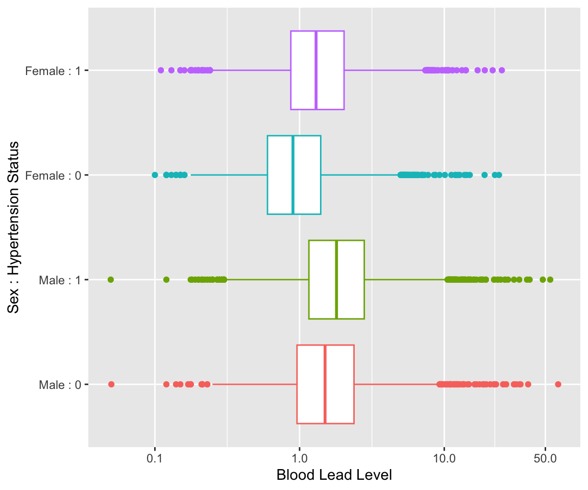

library(HDSinRdata)
library(tidyverse)
library(gt)
library(gtsummary)
data("NHANESsample")12 Case Study: Hypothesis Testing
For this chapter, we use the NHANESsample dataset seen in Chapter 4. The sample contains lead, blood pressure, BMI, smoking status, alcohol use, and demographic variables from NHANES 1999-2018. Variable selection and feature engineering were conducted to replicate the preprocessing conducted by Huang (2022). We further replicate the regression analysis by Huang (2022) in Chapter 13. Use the help operator ?NHANESsample to read the variable descriptions. Note that we ignore survey weights for this analysis.
Our analysis focuses on using hypothesis testing to look at the association between hypertension and blood lead levels by sex. We first select some demographic and clinical variables that we believe may be relevant, including age, sex, race, body mass index, and smoking status. We do a complete case analysis and drop any observations with missing data.
NHANESsample <- NHANESsample %>%
select("AGE", "SEX", "RACE", "SMOKE", "LEAD", "BMI_CAT",
"HYP", "ALC") %>%
na.omit()We begin with a summary table stratified by hypertension status. As expected, we see statistically significant differences between the two groups across all included variables. We also observe higher blood lead levels and a higher proportion of male participants for those with hypertension.
tbl_summary(NHANESsample, by = c("HYP"),
label = list(SMOKE ~ "SMOKING STATUS",
BMI_CAT ~ "BMI",
ALC ~ "ALCOHOL USE")) %>%
add_p() %>%
add_overall() %>%
modify_spanning_header(c("stat_1", "stat_2") ~
"**Hypertension Status**") %>%
as_gt()| Characteristic | Overall, N = 30,4251 | Hypertension Status | p-value2 | |
|---|---|---|---|---|
| 0, N = 13,7351 | 1, N = 16,6901 | |||
| AGE | 48 (34, 63) | 37 (28, 50) | 57 (44, 69) | <0.001 |
| SEX | <0.001 | |||
| Male | 16,031 (53%) | 6,410 (47%) | 9,621 (58%) | |
| Female | 14,394 (47%) | 7,325 (53%) | 7,069 (42%) | |
| RACE | <0.001 | |||
| Mexican American | 5,184 (17%) | 2,725 (20%) | 2,459 (15%) | |
| Other Hispanic | 2,207 (7.3%) | 1,145 (8.3%) | 1,062 (6.4%) | |
| Non-Hispanic White | 15,108 (50%) | 6,750 (49%) | 8,358 (50%) | |
| Non-Hispanic Black | 5,853 (19%) | 2,077 (15%) | 3,776 (23%) | |
| Other Race | 2,073 (6.8%) | 1,038 (7.6%) | 1,035 (6.2%) | |
| SMOKING STATUS | <0.001 | |||
| NeverSmoke | 14,682 (48%) | 7,210 (52%) | 7,472 (45%) | |
| QuitSmoke | 8,566 (28%) | 2,990 (22%) | 5,576 (33%) | |
| StillSmoke | 7,177 (24%) | 3,535 (26%) | 3,642 (22%) | |
| LEAD | 1.39 (0.85, 2.20) | 1.14 (0.71, 1.85) | 1.59 (1.00, 2.48) | <0.001 |
| BMI | <0.001 | |||
| BMI<=25 | 9,007 (30%) | 5,313 (39%) | 3,694 (22%) | |
| 25<BMI<30 | 10,456 (34%) | 4,718 (34%) | 5,738 (34%) | |
| BMI>=30 | 10,962 (36%) | 3,704 (27%) | 7,258 (43%) | |
| ALCOHOL USE | 24,174 (79%) | 11,624 (85%) | 12,550 (75%) | <0.001 |
| 1 Median (IQR); n (%) | ||||
| 2 Wilcoxon rank sum test; Pearson’s Chi-squared test | ||||
We also plot the distribution of blood lead levels (on a log scale) by sex and hypertension status. We can visually see that male observations tend to have higher blood lead levels and that having hypertension is associated with higher blood lead levels.
ggplot(NHANESsample) +
geom_boxplot(aes(x=LEAD,
y = interaction(HYP,SEX),
color = interaction(HYP,SEX))) +
scale_x_continuous(trans = "log", breaks = c(0.1, 1, 10, 50)) +
scale_y_discrete(labels = c("Male : 0", "Male : 1",
"Female : 0", "Female : 1")) +
guides(color = "none") +
labs(x="Blood Lead Level",
y = "Sex : Hypertension Status")
In Chapter 10, we explored that log blood lead levels could be approximated by a normal distribution. To test our hypothesis that there is a difference in mean log blood lead level between those with and without hypertension, we use a two-sample unpaired t-test. This shows a statistically significant difference between the two groups at the 0.05 level.
t.test(log(LEAD) ~ HYP, data = NHANESsample)
#>
#> Welch Two Sample t-test
#>
#> data: log(LEAD) by HYP
#> t = -37, df = 28853, p-value <2e-16
#> alternative hypothesis: true difference in means between group 0 and group 1 is not equal to 0
#> 95 percent confidence interval:
#> -0.314 -0.282
#> sample estimates:
#> mean in group 0 mean in group 1
#> 0.161 0.459Finally, we repeat this test for a stratified analysis and present the results in a concise table. For both groups, we find a statistically significant difference at the 0.05 level.
# stratify the data
nhanes_male <- NHANESsample[NHANESsample$SEX == "Male",]
nhanes_female <- NHANESsample[NHANESsample$SEX == "Female",]
# t-test for each
test_male <- t.test(log(LEAD) ~ HYP, data = nhanes_male)
test_female <- t.test(log(LEAD) ~ HYP, data = nhanes_female)
# create data frame
res_df <- data.frame(group = c("Male", "Female"),
statistic = signif(c(test_male$statistic,
test_female$statistic), 3),
p.value = signif(c(test_male$p.value,
test_female$p.value), 3))
res_df
#> group statistic p.value
#> 1 Male -14.7 1.84e-48
#> 2 Female -32.3 4.35e-221In Chapter 13, we use linear regression to further explore the association between blood lead level and hypertension adjusting for other potential confounders.